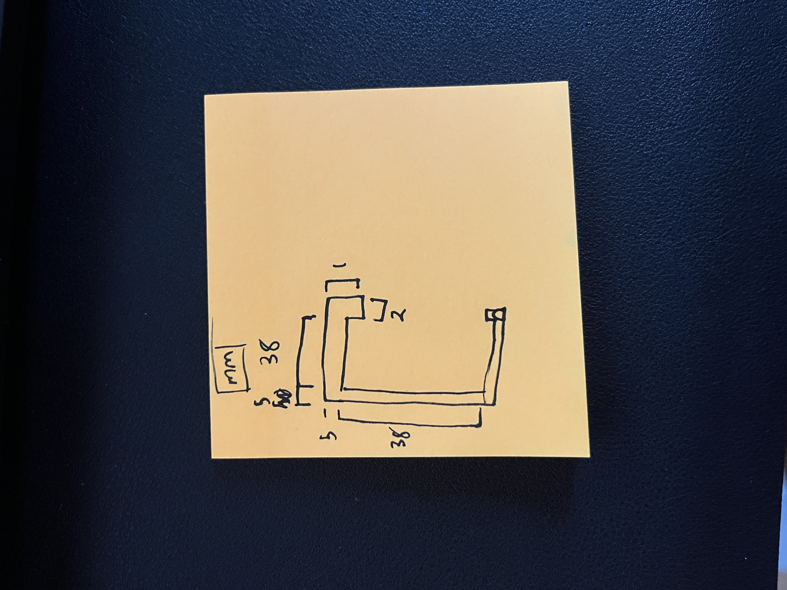
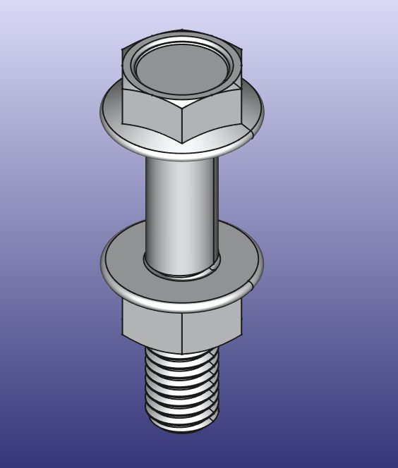
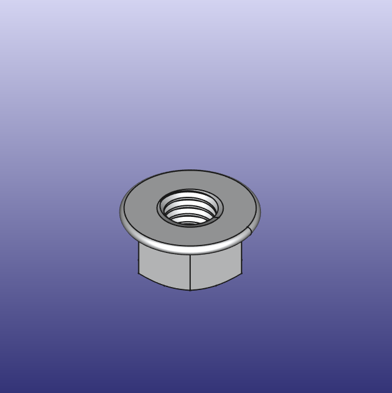
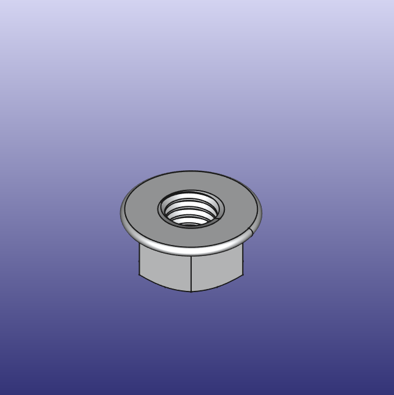

Object 1: Basic Design Tutorial 017
I missed class when Lucas went over this object and wow. I constantly found myself having a feeling of "oh yeah I got it now", stop reading the tutorial wiki, and then ultimately falling short. I got there in the end but leaned heavily into the manual.
Object 2: Desk Cord Holder
This design I am pretty proud of I was able to use my ruler to measure my desk. Since it is made of square stock I was able to set the contraints on my sketch to be equal lengths. This was pretty useful. I also used a 1mm latch that was 2mm in width. This will fit in the gap bettween the steel and the wood on my desk. This is not an issue on the underside of my desk, I could have made the lock much wider. I enjoyed iterating my sketch often going between measureing and FreeCAD too often, that is when I made my paper sketch.
Object 3: Fitting two things together
Now for this object I had no idea where to start. The first idea that came to mind of two things that fit together is, a nut and bolt. I searched "how to make a nut and bolt in free cad" and the result was a simple youtube videohere.
Do I think this is against the rules? No, what rules. I got to learn industry standard software using a add-on that makes peoples lifes easier.
 
